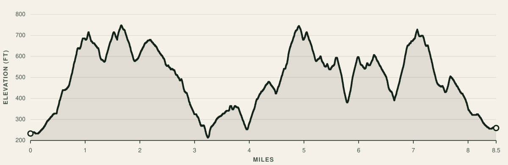

Loop Start/Finish
Hosted by Ben BarrettMallard Drive
Walnut Creek, CA 94597
All-Day Driveway Aid
Water, ice, and electrolytes provided.
Potluck party to follow.
Fatasswag
Custom Acaloops tee for all runners.
The Route
8.5 mi loop in Acalanes Ridge Open Space.
2,400+ ft of climbing. Sweeping views of Mount Diablo.
8.5 mi
Distance
2,400+ ft
Vert
6
Laps
51 mi
Total Distance
14.5k+ ft
Total Vert

Segment Showdown
Suburban Escape
Starts at mile 0.25
0.80 mi
Length
475 ft
Gain
11%
Avg Grade
Sousa to Summit
Starts at mile 4.0
0.95 mi
Length
600 ft
Gain
10%
Avg Grade
Short and Steep
Starts at mile 5.75
0.20 mi
Length
220 ft
Gain
21%
Avg Grade
Oh No, Not Yet
Starts at mile 6.75
0.25 mi
Length
255 ft
Gain
20%
Avg Grade